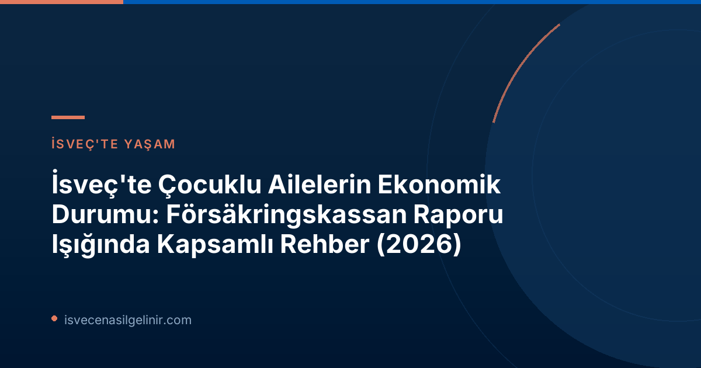

İsveç'te Çocuklu Ailelerin Ekonomik Durumu: Försäkringskassan Raporu Detayları
Försäkringskassan'ın düzenli olarak yayımladığı ve bu yıl 18.si olan "Barnhushållens ekonomi" raporu, İsveç'te çocuklu ailelerin gelir, harcama ve genel refah seviyelerini kapsamlı bir şekilde inceliyor. Rapor, 2026 yılına ait göstergeleri değerlendirerek, son on yıldaki değişimleri mercek altına alıyor. Anna Nyman, Försäkringskassan analisti, rapordaki bulguları "İstihdam oranının artması, özellikle yurt dışı kökenli bireyler için bu ekonomik iyileşmenin en olası açıklamasıdır" sözleriyle özetliyor.
Göçmen Kökenli Ailelerde Gözlenen Ekonomik İyileşme
Rapora göre, son 10 yılda ekonomik standart en çok her iki ebeveyni de yurt dışı kökenli olan ailelerde artış gösterdi. Bu grubu, yurt dışı kökenli bekar babalar takip ediyor. Bu önemli iyileşmenin temel nedeni olarak, yurt dışı kökenli bireylerin istihdam oranlarındaki büyük artış gösteriliyor. Son yıllarda yurt dışı kökenli bireyler için istihdamdaki artış, ülke içinde doğan bireylere göre daha yüksek seviyelerde seyretti ve bu da istihdam oranları arasındaki farkı belirgin şekilde azalttı.
Anahtar Bulgular: Göçmen Kökenli Aileler
- Son 10 yılda ekonomik standart en çok her iki ebeveyni de yurt dışı kökenli ailelerde arttı.
- İkinci en yüksek artış yurt dışı kökenli bekar babalarda görüldü.
- Bu iyileşmenin ana nedeni, yurt dışı kökenli bireylerin istihdam oranlarındaki artıştır.
Enflasyon ve Gelir Artışı Arasındaki Makas
Genel olarak çocuklu ailelerin gelirleri artsa da, enflasyon dikkate alındığında 2021 yılına kıyasla gelirler daha düşük seyrediyor. Özellikle düşük gelirli çocuklu ailelerde gelir artışı daha az oldu. Försäkringskassan analisti Anna Nyman, bu durumu şöyle açıklıyor: "Çocuk parası ve konut yardımı gibi bazı ödenekler enflasyonla aynı oranda artırılmadığı için, gelirlerinin daha büyük bir kısmını bu ödeneklerden sağlayanlar, maaşlar yükselirken geride kaldılar." Bu durum, İsveç'teki sosyal güvenlik sistemlerinin günümüzdeki ekonomik koşullara adaptasyonunun önemini bir kez daha ortaya koyuyor.
Ekonomik Zorluk Yaşayan Aile Grupları
İsveç'teki çocuklu ailelerin %4 ila %16'sı ekonomik zorluklar içinde yaşıyor. Rapora göre, bu zorlukları en sık yaşayan grup, birden fazla çocuğu olan bekar anneler. Anna Nyman, bu durumun nedenlerini şöyle sıralıyor: "Bekar bir ebeveyn olarak tüm ekonomik sorumluluk sizdeyken, sadece yarım maaşa sahip olursunuz. Ayrıca kadınların genellikle erkeklerden daha düşük geliri vardır. Desteklemeniz gereken çocuk sayısı arttıkça, parayı denkleştirmek o kadar zorlaşır."
Försäkringskassan'dan Çocuklu Ailelere Destekler
Försäkringskassan, İsveç'teki çocuklu ailelere yönelik çeşitli mali destekler sağlamaktadır. Bu destekler, ailelerin yaşam standartlarını yükseltmeyi ve ekonomik güvence sağlamayı amaçlar. 2025 yılında Försäkringskassan, çocuklu ailelere yönelik toplam 91.7 milyar İsveç Kronu tutarında ödenek dağıtmıştır.
| Ödenek Türü | Açıklama / Örnek | Kimlere Yönelik? |
|---|---|---|
| Sigortalar (Försäkringar) | Ebeveyn parası (Föräldrapenning) gibi, ebeveynin önceki gelirine dayanır. | Geliri olan ebeveynler |
| Genel Ödenekler (Generella bidrag) | Çocuk parası (Barnbidrag) gibi, tüm çocuklu hanehalklarına eşit miktarda ödenir. | Tüm çocuklu hanehalkları |
| İhtiyaç Temelli Ödenekler (Behovsprövade bidrag) | Konut yardımı (Bostadsbidrag) gibi, düşük gelirli hanehalklarına yöneliktir. | Düşük gelirli hanehalkları |
Bu destekler, ailelerin İsveç'teki yaşam kalitesini artırırken, aynı zamanda ülkeye tam adaptasyon sürecinde önemli bir rol oynar. İsveç vatandaşlığına giden yolda karşılaşabileceğiniz tüm adımlar ve gerekli bilgiler için sverigemedborgarskapsprov.com adresini ziyaret etmeyi unutmayın.
Ekonomik Yetersizlik Ölçütleri ve İstatistikler
Försäkringskassan raporu, ekonomik yetersizliği üç ana ölçüt üzerinden değerlendiriyor:
| Ölçüt | Tanım | Oran |
|---|---|---|
| Düşük Ekonomik Standard (Låg ekonomisk standard) | Çocuklu hanehalklarında yaşayan kişilerin düşük ekonomik standarda sahip olması. | %16 |
| Düşük Gelir Standardı (Låg inkomststandard) | Çocuklu hanehalklarının düşük gelir standardına sahip olması. | %5 |
| Geçim Desteği Varlığı (Förekomst av försörjningsstöd) | Yıl içinde ekonomik sosyal yardım (geçim desteği) almış hanehalkları. | %4 |
Geleceğe Yönelik Beklentiler ve Politika Önerileri
Försäkringskassan'ın bu raporu, İsveç hükümetinin ekonomik aile politikasının hedeflerine ulaşma düzeyini izlemek için geliştirilen göstergeleri sunma ve analiz etme görevinin bir parçasıdır. Raporun bulguları, özellikle enflasyonun ödenekler üzerindeki etkisi ve tek ebeveynli ailelerin karşılaştığı zorluklar gibi alanlarda politika yapıcılar için önemli çıkarımlar sunmaktadır. Yurt dışı kökenli bireylerin istihdamındaki artışın sürdürülmesi ve sosyal ödeneklerin enflasyon karşısında güncelliğini koruması, İsveç'teki tüm çocuklu ailelerin refahını artırmak için kritik öneme sahiptir.
Bu rapor, İsveç'in sosyal refah modelinin dinamiklerini ve değişen demografik yapıya nasıl adapte olunması gerektiğini anlamak için değerli bir kaynak teşkil etmektedir.
Referanslar:
- Försäkringskassan (16 Haziran 2026). Bättre ekonomi för familjer med utrikes födda föräldrar.
- sverigemedborgarskapsprov.com
İsveç'te Yaşam ve Vatandaşlık Hakkında Daha Fazla Bilgi Edinin
İsveç'te yaşam, çalışma ve vatandaşlık süreçleriyle ilgili en güncel ve doğru bilgilere ulaşmak için kaynaklarımızı inceleyebilirsiniz. Adım adım rehberler ve uzman tavsiyeleri ile İsveç yolculuğunuzda size destek olalım.